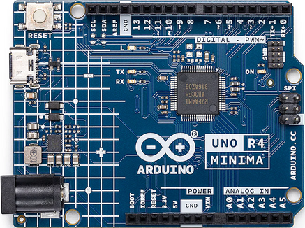

Arduino R4 Minima
This board features the R7FA4M1ABxCFM MCU with 256 KiB of FLASH and 32 KiB of SRAM running at 64 MHz (internal clock - HOCO).

See the Arduino website for information about Arduino R4 Minima.
Serial Consoles
The R7FA4M1ABxCFM has a UART and 4 SCI (UARTs).
Any of the SCI interfaces may be used as a serial console. By default, SCI2 is used as the serial console in all configurations. This can be easily changed by modifying the configuration.
Arduino R4 Minima
R7FA4M1ABxCFM
Pin (Label)
SCI Mapping
0 (RX0<-0)
RXD2
1 (TX0->1)
TXD2
13 (12)
RXD9
14 (~11)
TXD9
SWD-7
RXD1
SWD-8
TXD1
PWM Outputs
The R7FA4M1ABxCFM has a GPT (General Purpose Timer) that can be used for PWM output.
Any of the Arduino-r4-minima PWM outputs can be used. By default, it is disabled in all configurations. This can be easily changed by modifying the configuration.
Arduino R4 Minima
R7FA4M1ABxCFM
Pin (Label)
SCI Mapping
~3
GTIOC1B_P104
~5
GTIOC2B_P102
~6
GTIOC0B_P106
~9
GTIOC7B_P303
~10
GTIOC3B_P112
~11
GTIOC1A_P109
Loading Code
It is possible to use J-Link on the SWD connector or use USB Boot available through the USB-C connector.
RA USB Boot:
Reboot the board with BOOT shorted to GND and press the reset button twice (double click). The board will enumerate as “Renesas RA USB Boot.”
Then, flash the nuttx.hex file using rfp-cli:
(https://www.renesas.com/en/software-tool/renesas-flash-programmer-programming-gui)
Example command:
rfp-cli -device ra -port /dev/ttyACM0 -p ./build/nuttx.hex
Note: Programming using the binary format will fail because, by default, the RA4M1 NuttX port writes to the .idcode section, which is located beyond the end of the flash area. This causes the RFP to attempt writing to protected regions, leading to failures.